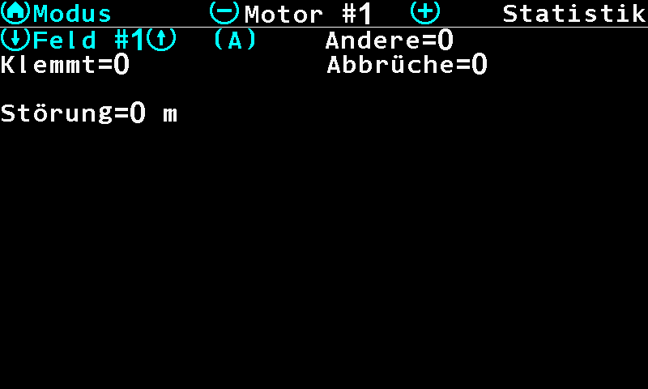

Diagnose der Motorcontroller
So lesen Sie auf dem Motorenbildschirm, was ein Dosiermotor-Controller über sich meldet – Drehzahl, Fehlercode, Spannungen, Temperatur, Strom, Statusbits und Störungszähler.
Der Motorenbildschirm ist zugleich der Diagnosebildschirm eines Motorcontrollers. Er zeigt live, was der Controller über sich meldet. Öffnen Sie ihn mit „MENU“ → „Service“ → „Elektromotoren“ (Ebene „Service“). Die Arbeitsansicht desselben Bildschirms ist in Der Bildschirm Motoren beschrieben.

- „Motor #1“ – welcher Motor gezeigt wird. (−) / (+) springen zum vorherigen / nächsten Motor.
- „Register“ – der Name der Seite.
- Das Statuswort – sechzehn Bits des Controllers; eine leuchtende (gelbe) Zelle ist ein gesetztes Bit.
- Die Legende der Bits – Nummer und Name jedes Bits. Tabelle unten.
- „Geschw.“ / „Sollgeschw.“ – was die Welle tut gegenüber dem, was das Panel verlangt hat. Eine Lücke, die sich nicht schließt, ist das erste Zeichen einer Last, die der Motor nicht tragen kann.
- „Fehlercode“ / „Ist-Pos.“ – die eigene Fehlernummer des Controllers (Codes) und die Position, auf der er sich selbst zählt.
- „Spg.Motor,mV“ / „Spg.Elektr.,mV“ – die Spannung am Motor und an der Elektronik, in Millivolt. Liegt die Motorspannung weit unter der Elektronikspannung, bricht die Versorgung unter Last ein.
- „Temperatur,C“ / „Strom,mA“ – die Temperatur des Controllers und der Strom, den er aufnimmt. Vergleichen Sie den Strom mit „I_hilo,A“, das für diesen Motor eingestellt ist (Motorcontroller konfigurieren).
Die Statusbits
| Bit | Name | Bit | Name |
|---|---|---|---|
| 0 | Enable | 8 | Toggle |
| 1 | Error | 9 | CmdTgl |
| 2 | Warn. | 10 | CmdErr |
| 3 | Moving | 11 | StpHalt |
| 4 | Reach | 12 | LimCur |
| 5 | Limit | 13 | LimVel |
| 6 | FolErr | 14 | LimPos |
| 7 | HomDone | 15 | LimSVel |
Die Legende wird auf jedem Panel auf Englisch gezeichnet, gleich in welcher Sprache es läuft: Sie ist eine Bitbelegung des Controllers, keine Meldung an die Bedienperson.
Die Störungszähler

Die Störungen, die dieser Motor auf dem gewählten Feld gesammelt hat – sie gehören zur Feldstatistik, nicht zum Motor:
| Zähler | Was er zählt |
|---|---|
| „Klemmt“ | Der Rotor blockierte, und der Controller musste aufgeben oder zurückfahren. |
| „Abbrüche“ | Der Controller antwortete nicht mehr. |
| „Andere“ | Alles Übrige, was der Controller meldete, auch Überstrom und Übertemperatur – sie haben keinen eigenen Zähler. |
| „Störung“ | Die Strecke in Metern, die dieser Motor in einem Störungszustand verbrachte. |
Jeder Zähler ist bei null weiß und rot, sobald er nicht mehr null ist. Eine rote Zahl heißt nicht, dass der Motor jetzt defekt ist – sie heißt, dass er es irgendwo auf diesem Feld war, und das dort ausgebrachte Saatgut verdient einen Blick.
Ihre Maschine tut etwas, das diese Seite nicht beantwortet? Schreiben Sie an support@agriwelt.com — es antwortet ein Ingenieur.